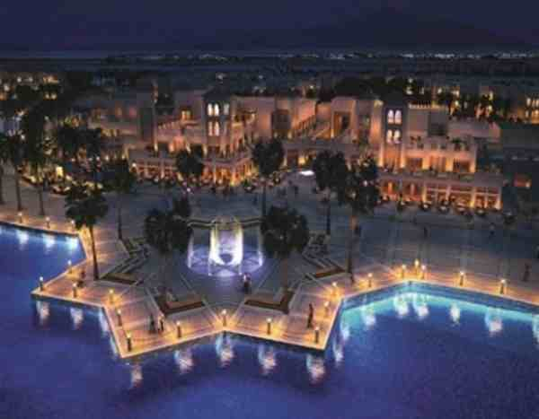

|  | |||
Sharm el-Sheikh is on a promontory overlooking the Straits of Tiran at the mouth of the Gulf of Aqaba. Its strategic importance led to its transformation from a fishing village into a major port and naval base for the Egyptian Navy.
It was captured by Israel during the Suez Crisis of 1956 and restored to Egypt in 1957. A United Nations peacekeeping force was subsequently stationed there until the 1967 Six-Day War when it was recaptured by Israel.
Sharm el-Sheikh remained under Israeli control until the Sinai peninsula was restored again to Egypt in 1982 after the Israel-Egypt Peace Treaty of 1979.[citation needed] A hierarchical planning approach was adopted for the Gulf of Aqaba, whereby their components were evaluated and subdivided into zones,
cities and centers. In accordance with this approach the Gulf of Aqaba zone was subdivided into four cities: Taba, Nuweiba, Dahab and Sharm El-Sheikh. Sharm el-Sheikh city has been subdivided into five homogeneous centers,